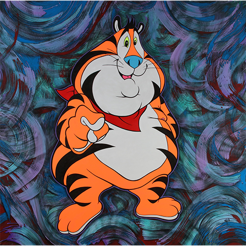
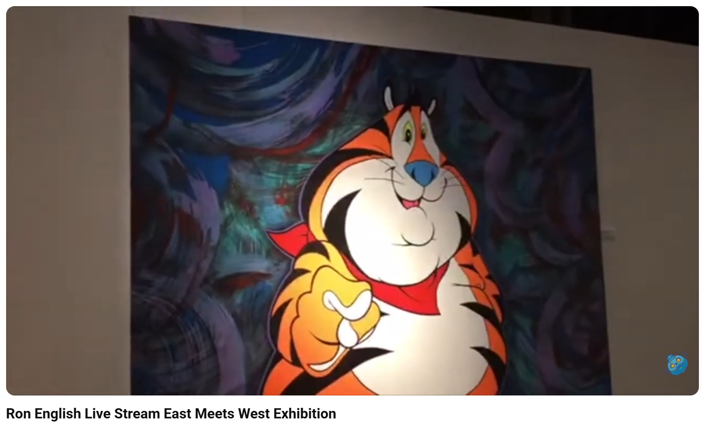

Exhibitions
East Meets West, The Qube, PMQ, Hong Kong, China, May 6–14, 2017.
Notes
This work appears at 4:55 in The Toy Chronicle’s YouTube video Ron English Live Stream East Meets West Exhibition.
Installation photographs from Ron English’s personal photo archive document Fat Tony Splash on view in East Meets West.
This painting references Tony the Tiger, the mascot associated with Kellogg’s Frosted Flakes.
Ancillary Documentation



Selected Online Circulation
Selected source documenting the work’s wider online circulation.